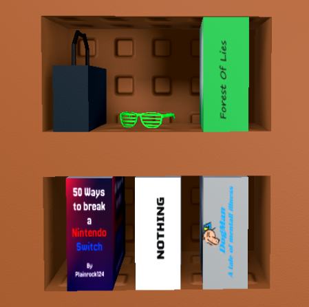

Sqish's Home
Sqish's Home is like the gm_construct of Classic Sandbox. It's 100% accurate when it comes to the place of where Sqish lives and it contains a lot. Very great map to play with your friends on when playing for the first time!
Easter Eggs
Easter eggs are a very fun part of maps, from hidden lore to random scenery. This map has the most — books with fully made covers, spines, and hidden details everywhere. Look around and have a laugh… maybe.

Other Images